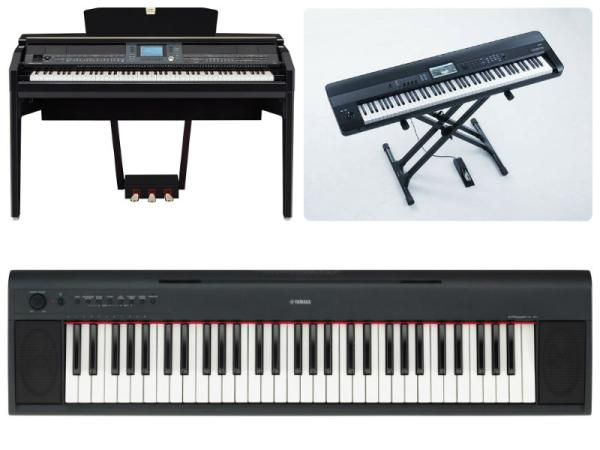

Existen dos categorías principales de pianos: los pianos acústicos y los pianos digitales. Los pianos acústicos son los más tradicionales y funcionan mediante cuerdas y martillos que producen sonido de forma natural. Dentro de esta categoría, encontramos los pianos de cola y los pianos verticales. Los pianos digitales, por otro lado, utilizan tecnología electrónica para reproducir el sonido de un piano acústico y suelen ser más compactos y accesibles, ideales para principiantes o músicos que necesitan mayor portabilidad.
(Image by: app.emaze.com)
El piano de cola es el modelo más grande y sofisticado. Su estructura horizontal permite que las cuerdas y los martillos tengan una mejor resonancia y respuesta, lo que resulta en un sonido más rico y potente. Es el favorito en conciertos y salas de música, ya que ofrece una mayor precisión en la interpretación. Dentro de esta categoría, hay diferentes tamaños, desde el gran cola de concierto, que puede superar los 3 metros de largo, hasta el baby grand, más compacto pero con excelente calidad de sonido.
(Image by: pinnaxis.com)
El piano vertical, en cambio, tiene un diseño más compacto con cuerdas y martillos dispuestos de forma vertical, lo que lo hace ideal para espacios reducidos. Aunque su sonido no tiene la misma profundidad que un piano de cola, sigue siendo una excelente opción para el estudio y la práctica. Por otro lado, los pianos digitales han ganado popularidad gracias a su versatilidad: pueden incluir variedad de sonidos, conectividad con dispositivos y la posibilidad de tocar con auriculares. Con tantas opciones disponibles, hay un piano perfecto para cada necesidad y nivel musical.
(Image by: buscarinstrumentos.com)
{kind=link}
{kind=link}